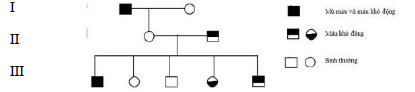

Đề môn Hóa Học số 1
SỞ GIÁO DỤC VÀ ĐÀO TẠO THANH HÓA ĐỀ THI KHẢO SÁT CHẤT LƯỢNG
90
:phút
00
:giây
Ghi Chú
Câu 1:
Số phát biểu đúng về đột biến chuyển đoạn tương hỗ nhiễm sắc thể:
1. Chuyển đoạn tương hổ làm thay đổi nhóm gen liên kết.
2. Chuyển đoạn tương hổ là một nhiễm sắc thể này sát nhập vào một nhiễm sắc thể khác.
3. Tế bào mang đột biến chuyển đoạn tương hỗ giữa hai nhiễm sắc thể khi giảm phân không thể tạo ra loại giao tử bình thường.
4. Chuyển đoạn tương hỗ là một đoạn nhiễm sắc thể này chuyển sang một nhiễm sắc thể khác không tương đồng với nó và ngược lại.
A: 4.
B: 2.
C: 1.
D: 3.
Câu 2:
Ở một loài thú xét 4 gen: gen I và gen II cùng nằm trên cặp nhiễm sắc thể thường số 1 và biết quần thể tạo ra tối đa 6 loại giao tử về các gen này. Gen III nằm trên X và không có alen tương ứng nằm trên Y và gen IV nằm trên đoạn tương đồng của X và Y. Biết quần thể này tạo tối đa 9 loại tinh trùng về các gen trên NST giới tính. Biết không có đột biến xảy ra. Số loại kiểu gen tối đa có thể có của quần thể và các loại gen trên là:
A: 567.
B: 237.
C: 819.
D: 189.
Câu 3:
Điều nào sau đây không đúng khi nói về biến dị tổ hợp?
A: Xuất hiện do sự tái tổ hợp vật chất bình thường trong quá trình sinh sản.
B: Có tính định hướng.
C: Xuất hiện riêng lẻ, cá thể.
D: Là nguyên liệu của tiến hóa, chọn giống.
Câu 4:
Ở phép lai ♂AaBbDdEe x ♀AabbddEe ,Trong quá trình giảm phân của cơ thể đực, cặp NST mang cặp gen Aa ở 10% số tế bào không phân li trong giảm phân I, giảm phân II diễn ra bình thường, các cặp NST khác phân li bình thường. Trong quá trình giảm phân của cơ thể cái, cặp NST mang cặp gen Ee ở 2% số tế bào không phân li trong giảm phân I, giảm phân II diễn ra bình thường, các cặp NST khác phân li bình thường. Ở đời con, loại hợp tử đột biến chiếm tỉ lệ
A: 0,2%.
B: 88,2%.
C: 2%.
D: 11,8%.
Câu 5:
Liệu pháp gen là
A: Chuyển gen mong muốn từ loài này sang loài khác để tạo giống mới.
B: Phục hồi chức năng bình thường của tế bào hay mô, phục hồi sai hỏng di truyền.
C: Chữa trị các bệnh di truyền bằng cách phục hồi chức năng của các gen bị đột biến.
D: Nghiên cứu các giải pháp để sửa chữa hoặc cắt bỏ các gen gây bệnh ở người.
Câu 6:
Ở ruồi giấm, alen A quy định thân xám trội hoàn toàn so với alen a quy định thân đen, alen B quy định cánh dài trội hoàn toàn so với alen b quy định cánh cụt. Các gen quy định màu thân và hình dạng cánh đều nằm trên một nhiễm sắc thể thường. Alen D quy định mắt đỏ trội hoàn toàn so với alen d quy định mắt trắng nằm trên đoạn không tương đồng của nhiễm sắc thể giới tính X. Cho giao phối ruồi cái thân xám, cánh dài, mắt đỏ với ruồi đực thân đen, cánh cụt, mắt đỏ trong tổng số các ruồi thu được ở Fl, ruồi có kiểu hình thân xám, cánh dài, mắt trắng chiếm tỉ lệ 1%. Tính theo lí thuyết, tỉ lệ ruồi F1 có kiểu hình thân xám, cánh cụt, mắt đỏ là
A: 3%.
B: 34,5%.
C: 50%.
D: 11,5%.
Câu 7:
Quá trình xử lí các bản sao ARN sơ khai ở tế bào nhân chuẩn được xem là sự điều hòa biểu hiện gen ở mức:
A: sau dịch mã
B: sau phiên mã
C: dịch mã
D: phiên mã
Câu 8:
Ở thế hệ xuất phát ở một quần thể tự phối có tuổi trước sinh sản P : 0,2AA + 0,6Aa + 0,2 aa = 1. Xác định tỷ lệ kiểu gen ở thế hệ F5 trước sinh sản. Biết rằng các cá thể có kiểu hình lặn không có khả năng sinh sản.
A: 157/163 AA : 6/163 Aa.
B: 36/49AA : 12/49 Aa : 1/49 aa.
C: 3/4AA : 1/4 Aa.
D: 157/166 AA : 6/166 Aa : 3/166 aa.
Câu 9:
Để sản xuất insulin trên quy mô công nhiệp người ta chuyển gen mã hóa insulin ở người vào vi khuẩn E. coli bằng cách phiên mã ngược mARN của gen người thành ADN rồi mới tạo ADN tái tổ hợp và chuyển vào E. coli.
1. ADN của người tồn tại trong nhân nên không thể hoạt động được trong tế bào vi khuẩn.
2. gen của người không thể phiên mã được trong tế bào vi khuẩn.
3. sẽ không tạo ra được sản phẩm mong muốn vì cơ chế di truyền ở cấp độ phân tử của E.coli không phù hợp với ADN tái tổ hợp mang gen người.
4. sẽ không tạo ra được sản phẩm như mong muốn vì cơ chế di truyền ở cấp độ phân tử của E. coli không phù hợp với hệ gen người. Số đáp án đúng trong các giải thích sau về cơ sở khoa học của việc làm trên là:
A: 2.
B: 3.
C: 1.
D: 4.
Câu 10:
Ở một quần thể ngẫu phối, xét 4 gen: gen thứ nhất và gen thứ hai đều có 2 alen, nằm trên đoạn không tương đồng của nhiễm sắc thể giới tính X; gen thứ ba có 4 alen nằm trên nhiễm sắc thể thường; gen thứ tư có 3 alen nằm trên đoạn tương đồng của nhiễm sắc thể giới tính X và Y. Trong trường hợp không xảy ra đột biến, số loại kiểu gen tối đa về cả bốn gen trên có thể được tạo ra trong quần thể này là
A: 1140.
B: 870.
C: 2250.
D: 350.
Câu 11:
Cho các biện pháp
1- Dung hợp tế bào trần
2- Cấy truyền phôi.
3- Nhân bản vô tính.
4- Nuôi cấy hạt phấn sau đó lưỡng bội hóa.
5- Tự thụ phấn liên tục từ 5 đến 7 đời kết hợp với chọn lọc.
Phương pháp được sử dụng để tạo ra dòng thuần chủng là:
A: 4,5.
B: 2,3,4.
C: 3,4,5.
D: 1,2,3,4,5.
Câu 12:
Khi nói về ưu thế lai, phát biểu nào sau đây không đúng?
A: Một trong những giả thuyết để giải thích cơ sở di truyền của ưu thế lai được nhiều người thừa nhận là giả thuyết siêu trội
B: Để tạo ra những con lai có ưu thế lai cao về một số đặc tính tốt nào đó, người ta thường bắt đầu bằng cách tạo ra những dòng thuần chủng khác nhau
C: Trong một số trường hợp, lai giữa hai dòng nhất định thu được con lai không có ưu thế lai, nhưng nếu cho con lai này lai với dòng thứ ba thì đời con lại có ưu thế lai.
D: Người ta tạo ra những con lai khác dòng có ưu thế lai cao để sử dụng cho việc nhân giống.
Câu 13:
Cho các biện pháp sau:
1. Bảo vệ môi trường sống trong sạch.
2. Tư vấn di truyền.
3. Sàng lọc trước sinh.
4. Liệu pháp gen.
5. Mở các trung tâm bảo trợ xã hội dành cho người bị tật, bệnh di truyền.
Số phương án đúng để bảo vệ vốn gen của loài người là:
A: 5.
B: 4.
C: 2.
D: 3.
Câu 14:
Giả sử một gen đang nhân đôi trong môi trường có 1 phân tử 5- Brôm Uraxin (5-BU) thì sau 6 lần nhân đôi thì số lượng gen đột biến bị đột biến thay thế A-T bằng G−X và số gen gen bình thường lần lượt là bao nhiêu? Biết rằng 5-BU chỉ có một lần thay đổi cấu trúc trong suốt quá trình nhân đôi của gen nói trên.
A: 15 và 48.
B: 3 và 28.
C: 15 và 30.
D: 7 và 24.
Câu 15:
Quy trình tạo giống bằng phương pháp gây đột biến gồm có 3 trong các bước sau:
I. Cho tự thụ phấn hoặc lai xa để tạo ra các giống thụần chủng.
II. Chọn lọc các thể đột biến có kiểu hình mong muốn.
III. Xử lý mẫu vật bằng tác nhân đột biến.
IV. Tạo dòng thuần chủng.
Quy trình nào sau đây là đúng nhất ?
A: II → III → IV.
B: I → III → II.
C: III → II → IV.
D: III → II → I.
Câu 16:
Ở một loài ngẫu phối, thế hệ xuất phát có 100 cá thể trong đó có 64 con cái có kiểu gen AA, 32 con cái có kiểu gen Aa, 4 con đực có kiểu gen aa Ở thế hệ F2 tỉ lệ kiểu gen Aa chiếm tỉ lệ:
A: 5/6.
B: 2/25.
C: 35/72.
D: 8/25.
Câu 17:
Một cơ thể có kiểu gen AaBb giảm phân phát sinh giao tử, ở một số tế bào xảy ra sự rối loạn phân ly trong giảm phân ở cặp nhiễm sắc thể chứa cặp gen Aa. Cơ thể đó có thể tạo ra số loại giao tử tối đa là
A: 12
B: 4
C: 8
D: 6
Câu 18:
Một cây có kiểu gen (AB/ab)x(De/dE) tự thụ phấn, đời con thu được nhiều loại kiểu hình trong đó kiểu hình trội về 4 tính trạng là 33,165%. Nếu khoảng cách di truyền giữa A và B 1à 20cM thì khoảng cách di truyền giữa D và e là:
A: 30 cM.
B: 10 cM.
C: 20 cM.
D: 40 cM.
Câu 19:
Loại đột biến làm tăng số loại alen trong cơ thể là:
A: đột biến đa bội.
B: đột biến lặp đoạn nhiễm sắc thể.
C: đột biến gen.
D: đột biến lệch bội.
Câu 20:
Ở cà chua, alen A quy định quả đỏ trội hoàn toàn so với alen a quy định quả vàng, alen B quy định thân cao trội hoàn toàn so với a quy định thân thấp. Cho giao phối cây lưỡng bội thuần chủng khác nhau về hai tính trạng trên thu được F1. Xử lí cônsixin với các cây F1 sau đó cho hai cây F1 giao phấn với nhau thu được đời con F2 có kiểu hình phân li theo tỉ lệ 121 : 11 :11 : 1. Các phép lai có thể cho kết quả trên gồm:
1. AAaaBBbb X AaBb.
2. AAaaBb X AaBBbb.
3. AaBbbb x AAaaBBbb.
4.AAaaBBbb X AaaaBbbb.
5. AaaaBBbb X AAaaBb.
6. AaBBbb X AaaaBbbb.
Có mấy trường hợp mà cặp bố mẹ F1 không phù hợp với kết quả F2?
A: 4.
B: 1.
C: 3.
D: 2.
Câu 21:
Bệnh mù màu đỏ - lục và bệnh máu khó đông do hai gen lặn nẳm trên nhiễm sắc thể X quy định, cách nhau 12cM. Cho sơ đồ phả hệ sau:

Hiện nay người phụ nữ ở thế hệ thứ 2 đang một bé trai bình thường (không mắc cả hai bệnh di truyền trên) là bao nhiêu?
A: 75%
B: 3%
C: 22%
D: 25%
Câu 22:
Từ quần thể cây 2n, người ta tạo được quần thể cây 4n, có thể xem quần thể cây 4n là một loài mới vì
A: quần thể cây 4n khi giao phấn với quần thể câv 2n cho ra con lai bất thụ.
B: quần thể cây 4n có đặc điểm hình thải khác hẳn quần thể cây 2n.
C: quần thể cây 4n có sự khác biệt với quần thể cây 2n về số lượng nhiễm sắc thể.
D: quần thể cây 4n quần thể cây 4n không thể giao phấn với quần thể cây 2n.
Câu 23:
Cho các hiện tượng sau: 1. Gen điều hòa của Operon Lac bị đột biến dẫn tới protein ức chế bị biến đổi không gian và mất chức năng sinh học. 2. Đột biến làm mất vùng khởi động (vùng P) của Operon Lac. 3. Gen cấu trúc Y bị đột biến dẫn tới protein do gen này quy định tổng hợp bị mất chức năng. 4. Vùng vận hành (vùng O) của Operon Lac bị đột biến và không còn khả năng gắn kết với protein ức chế. 5. Vùng khởi động của gen điều hòa bị đột biến làm thay đổi cấu trúc và không còn khả năng gắn kết với enzim ARN polimeraza. Khi không có đường Lactozo có bao nhiêu trường hợp operon Lac vẫn thực hiện phiên mã?
A: 3.
B: 5.
C: 2.
D: 4.
Câu 24:
Một đoạn pôlipeptit gồm 4 axit amin có trình tự: Val - Trp - Lys- Pro. Biết rằng các côđon mã hóa các axit amin tương ứng như sau: Trp - UGG ; Val - GUU; Lys - AAG ; Pro - XXA. Đoạn mạch gốc của gen mang thông tin mã hóa cho đoạn pôlipeptit nói trên có trình tự nuclêôtit là:
A: 5’ GTT - TGG - AAG - XXA 3’.
B: 5’ GUU - UGG- AAG - XXA 3’.
C: 5’ XAA- AXX - TTX - GGT 3’.
D: 5’ TGG -XTT - XXA - AAX 3’.
Câu 25:
Trong các câu sau đây khi nói vê đột biến điểm: 1. Đột biến điểm là những biến đổi nhỏ nên ít có vai trò trong quá trình tiến hóa. 2. Đột biến điểm là những biến đổi đồng thời tại nhiều điểm khác nhau trong gen cấu trúc 3. Trong bất cứ trường hợp nào, tuyệt đại đa số đột biến điểm là có hại. 4. Trong số các đột biến điểm thì phần lớn đột biến thay thế một cặp nuclêôtit là gây hại ít nhất cho cơ thể sinh vật. 5. Xét ở mức độ phân tử, phần nhiều đột biến điểm là trung tính. 6. Mức độ gây hại của alen đột biến phụ thuộc vào điều kiện môi trường và tổ hợp gen mà nó tồn tại. Có bao nhiêu câu đúng?
A: 2
B: 3
C: 5
D: 4
Câu 26:
Sinh vật biến đổi gen không được tạo ra bằng phương pháp nào sau đây:
A: Đưa thêm một gen của loài khác vào hệ gen.
B: Loại bỏ hoặc làm bất hoạt một gen nào đó trong hệ gen.
C: Tổ hợp lại các gen vốn có của bố mẹ bằng lai hữu tính.
D: Làm biến đổi một gen đã có sẵn trong hệ gen.
Câu 27:
Trong một chu kì tế bào kết luận đúng về sự nhân đôi của ADN và sự phiên mã diễn ra trong nhân là :
A:Tùy theo từng đoạn tế bào mà số lần nhân đôi và số lần nhân đôi và số lần phiên mã có thể như nhau hoặc có thể khác nhau.
B: Số lần phiên mã gấp nhiều lần số lần nhân đôi.
C: Số lần nhân đôi và số lần phiên mã bằng nhau.
D: Có một lần nhân đôi và nhiều lần phiên mã.
Câu 28:
Một số tế bào sinh tinh ở một loài thú khi giảm phân có thể tạo ra tối đa 768 loại giao tử. Biết rằng trong quá trình giảm phân có 3 cặp nhiễm sắc thể tương đồng xảy ra trao đổi chéo một điểm, cặp nhiễm sắc thể giới tính bị rối loạn giảm phân 2 ở tất cả các tế bào, các cặp còn lại không trao đổi chéo và đột biến. Bộ nhiễm sắc thể lưỡng bội của loài là:
A: 2n=16.
B: 2n=12.
C: 2n=8.
D: 2n=10.
Câu 29:
Ở 1 loài động vật, tình trạng màu mất do 1 gen nằm trên NST thường có 3 alen qui định.Người ta tiến hành 2 phép lai như sau: Phép lai 1: mắt đỏ x mắt vàng thu được 1 mắt đỏ, 1 mắt vàng, 1 mắt hồng, 1 mắt trắng. Phép lai 2: Mắt hồng x mắt trắng thu được 1 mắt đỏ : 1 mắt vàng. Nếu cho các cá thể mắt đỏ giao phối với các cá thể mắt hồng thì kiểu hình mắt đỏ ở đời con là:
A: 100%
B: 25%
C: 50%
D: 75%
Câu 30:
Ở người tình trạng hói đầu di truyền chịu ảnh hưởng của giới tính,với B: hói đầu, b: không hói, Bb chỉ hói đầu ở nam giới.Trong 1 quần thể người đang cân bằng di truyền f(B)=0.01.Thực hiện phép lai P:Bố hói đầu × mẹ hói đầu thì xác suất sinh con bị hói đầu là:
A: 0,66.
B: 0,75.
C: 0,99.
D: 0,24.
Câu 31:
Nuôi cấy hạt phấn của cơ thể AaBbDDEe. Sau đó lưỡng bội hóa thành giống thuần chủng. Theo lý thuyết sẽ tạo ra được tối đa bao nhiêu giống mới?
A: 16 giống.
B: 8 giống.
C: 4 giống.
D: 1 giống.
Câu 32
Cho cá thể mắt đỏ thuần chủng lai với cá thể mắt trắng được F1 đều mắt đỏ. Cho con cái F1 lai phân tích với đực mắt trắng thu được tỉ lệ 3 mắt trắng: 1 mắt đỏ, trong đó mắt đỏ đều là con đực. Kết luận nào sau là đúng?
A: Màu mắt di truyền theo tương tác bổ sung P: ♂ AAXBXB X ♀aaXbY.
B: Màu mắt di truyền trội lặn hoàn toàn P: ♀XAXA x ♂XaY .
C: Màu mắt di truyền theo tương tác bổ sung P: ♀ AAXBXb X ♂ aaXbY.
D: Màu mắt di truyền theo trội hoàn toàn P: ♀XAXA X ♂ XaY.
Câu 33:
Trình tự nào sau đây là đúng trong kỹ thuật cấy gen ?
I. Cắt ADN của tế bào cho và cắt mở vòng plasmit.
II. Tách ADN của tế bào cho và tách plasmit ra khỏi tế bào.
III. Chuyển ADN tái tổ hợp vào tế bào nhận.
IV. Nối đoạn ADN của tế bào cho vào ADN của plasmit.
Tổ hợp trả lời đúng là:
A: I, III, IV, II.
B: I, II, III, IV.
C: II, I, III, IV.
D: II, I, IV, III..
Câu 34:
Đem lai phân tích F1 (Aa, Bb , Dd) x (aa, bb, dd). Cho biết mỗi gen quy định một tính trạng trội lặn hoàn toàn. Nếu Fb xuất hiện 4 loại kiểu hình trong đó có 2 loại kiểu hình giống bố mẹ chiếm tỉ lệ bằng nhau và bằng 45% thì kết luận nào sau đây là đúng?
1. Mỗi loại kiểu hình còn lại chiếm 55%.
2. Ba cặp gen cùng nằm trên hai cặp nhiễm sắc thể tương đồng và xảy ra hoán vị gen với tần số 10% .
3. F1 tạo 4 kiểu giao tử có tỉ lệ 45%, 45% , 5% , 5% .
4. Ba cặp gen cùng nằm trên một cặp nhiễm sắc thể tương đồng, các gen trội liên kết với nhau và có xảy ra trao đổi chéo ở 1 cặp với tần số hoán vị gen bằng 10% .
Đáp án đúng:
A: 2,3
B: 1,2
C: 1,3,4
D: 3,4
Câu 35:
Nội dung không đúng khi nói về gen phân mảnh:
A: Nằm ở lôcut xác định trên nhiễm sắc thể, luôn tồn tại thành từng cặp alen trong tế bào lưỡng bội.
B: Mỗi gen phiên mã 1 lần sẽ tổng hợp được nhiều phân từ ARN trưởng thành.
C: Là thuật ngữ dùng để chỉ tất cả các gen ở sinh vật nhân thực.
D: Khi phiên mã, các intron không mã hóa thông tin trên mARN trưởng thành.
Câu 36:
Nhiều loại bệnh ung thư xuất hiện là do gen tiền ung thư hoạt động quá mức tạo ra quá nhiều sản phẩm của gen. Kiểu đột biến nào dưới đây không giải thích cho cơ chế gây bệnh ung thư ở trên?
A: Đột biến xảy ra trong vùng điều hoà làm tăng mức độ phiên mã, dịch mã của gen tiền ung thư.
B: Đột biến ở vùng mã hoá của gen tiền ung thư làm thay đổi cấu trúc chức năng của phân tử prôtêin do gen mã hoá
C: Đột biến chuyển đoạn, đảo đoạn đưa các gen tiền ung thư đến vị trí được điều khiển bởi các promoter hoạt động mạnh hơn làm tăng mức độ biểu hiện của gen.
D: Đột biến lặp đoạn làm xuất hiện nhiều bản sao của gen tiền ung thư làm tăng mức độ biểu hiện của gen.
Câu 37:
Cho các bệnh, tật và hội chứng di truyền sau đây ở người:
(1) Bệnh mù màu.
(2) Bệnh ung thư máu.
(3) Tật có túm lông ở vành tai.
(4) Hội chứng Đao.
(5) Hội chứng Tơcnơ.
(6) Bệnh máu khó đông.
Các bệnh, tật và hội chứng trên được phát hiện bằng phương pháp
A: nghiên cứu di truyền quần thể.
B: phả hệ.
C: quan sát, nghiên cứu kiểu hình đột biến.
D: sinh học phân tử và sinh học tế bào.
Câu 38:
Ở ngô, tính trạng chiều cao do 3 cặp gen không alen tác động theo kiểu cộng gộp (Al, al, A2, a2, A3, a3), chúng phân ly độc lập và cứ mỗi gen trội khi có mặt trong kiểu gen sẽ làm cho cây thấp đi 20 cm, cây cao nhất có chiều cao 210cm. Ở khi cho các cây ở thế hệ lai (giữa cây cao nhất và cây thấp nhất) giao phấn với nhau thì tỷ lệ số cây có chiều cao 170cm là bao nhiêu?
A: 9/64.
B: 3/8.
C: 3/32.
D: 15/64.
Câu 39:
Mức độ có lợi hay có hại của gen đột biến phụ thuộc vào
A: tần số phát sinh đột biến.
B: tỉ lệ đực, cái trong quần thể.
C: số lượng cá thể trong quần thể.
D: môi trường sống và tổ hợp gen.
Câu 40:
Ưu điểm của phương pháp phương pháp chọn lọc dòng tế bào xôma có biến dị là:
A: tạo ra các giống cây trồng mới mang đặc điểm của 2 dạng bố mẹ ban đầu trong thời gian ngắn.
B: nhân nhanh các giống cây trồng có năng suất cao, phẩm chất tốt, sạch bệnh.
C: tạo ra các giống cây trồng mới có các đặc tính mong muốn trong thời gian ngắn.
D: tạo ra các giống cây trồng mới thuần chủng về tất cả các gen trong thời gian ngắn
Câu 41:
Nếu số lượng nhiễm sắc thể trong một tế bào lưỡng bội ở pha G1 của chu kì tế bào là 24, thì số phân tử ADN của một tế bào ở kì cuối của giảm phân I sẽ là
A: 12.
B: 96.
C: 24.
D: 48.
Câu 42:
Khi quan sát quá trình tái bản của một phân tử ADN người ta thấy có 240 đoạn Okazaki và 256 đoạn mồi. Hỏi quá trình tái bản ADN này đã hình thành nên số đơn vị tái bản là
A: 6.
B: 7.
C: 9.
D: 8.
Câu 43:
Ở cà chua, gen A qui định tính trạng hoa đỏ, alen a quy định hoa trắng. Cho giao phấn giữa hai cây cà chua tứ bội đời F1 phân li kiểu hình theo tỉ lệ 3 cây hoa đỏ : 1 cây hoa trắng. Nếu quá trình giảm phân và thụ tinh diễn ra bình thường thì kiểu gen của hai cây cà chua bố mẹ là:
A: AAaa x AAaa.
B: Aaaa x Aaaa.
C: AAAa x AAaa.
D: AAaa x Aaaa.
Câu 44:
Yếu tố nào không thay đổi ở các thế hệ trong quần thể tự phối?
A: Tần số của các alen.
B: Tần số kiểu gen và kiểu hình.
C: Tần số kiểu gen.
D: Tần số kiểu hình.
Câu 45:
Chỉ số ADN là trình tự lặp lại của một đoạn nuclêôtit
A: trong vùng điều hòa của gen.
B: trong các đoạn êxôn của gen.
C: trên ADN không chứa mã di truyền.
D: trong vùng kết thúc của gen
Câu 46:
Một gen ở tế bào nhân sơ có 2400 nuclêôtit. Trên mạch 1 của gen, hiệu số tỉ lệ % giữa A với T bằng 20% số nuclêôtit của mạch. Trên mạch 2 có số nuclêôtit loại A chiếm 15% số nuclêôtit của mạch và bằng 1/2 số nuclêôtit của G. Khi gen phiên mã 1 số lần đã lấy từ môi trường nội bào 540 Uraxin. Số lượng nuclêôtit từng loại trên mARN được tổng hợp từ gen nói trên là
A: A = 840 ; U = 360 ; X = 720 ; G = 480.
B: A = 420 ; U = 180 ; X = 360 ; G = 240.
C: A = 180 ; U = 420 ; X = 240 ; G = 360.
D: A = 180 ; U = 420 ; X = 360 ; G = 240.
Câu 47:
Trong một phép lai phân tích giữa cây ngô dị hợp tử về 3 gen với cây đồng hợp tử lặn về 3 gen đó, thu được kết quả sau:A-B-C-: 113 cây; aabbcc: 105 cây; A-B-cc: 70 cây; aabbC-: 64 cây; A-bbcc: 17 cây; aaB-C-: 21 cây. Trật tự phân bố 3 gen và khoảng cách giữa các gen là
A: BAC; AB-9,7; BC-34,4.
B: BAC; AB- 34,4; BC-9,7.
C: ABC; AB-9,7; BC-34,4.
D: ABC; AB-34,4; BC-9,7.
Câu 48:
Cho các phương pháp sau:
1. Lai các dòng thuần có kiểu gen khác nhau.
2. Gây đột biến rồi chọn lọc.
3. Cấy truyền phôi.
4. Lai tế bào sinh dưỡng.
5. Nhân bản vô tính ở động vật.
6. Tạo giống sinh vật biến đổi gen.
Trong các phương pháp kể trên có mấy phương pháp tạo giống mới?
A: 3
B: 5
C: 6
D: 4
Câu 49:
Trong quá trình giảm phân của một tế bào sinh tinh ở cơ thể có kiểu gen AB/ab đã xảy ra hoán vị gen giữa alen A và a . Cho biết không có đột biến xảy ra tính theo lý thuyết, số loại giao tử và tỉ lệ từng loại giao tử được tạo ra từ quá trình giảm phân của tế bào trên là
A: bốn loại với tỉ lệ 1 : 1 : 1 : 1.
B: hai loại với tỉ lệ phụ thuộc vào tần số hoán vị gen.
C: hai loại với tỉ lệ phụ thuộc vào tần số hoán vị gen.
D: hai loại với tỉ lệ 1 : l.
Câu 50:
Ở đậu Hà Lan, tính trạng hoa đỏ là do gen A qui định trội hoàn toàn so với gen a qui định hoa trắng, gen quy định tính trạng nằm trên nhiễm sắc thể thường. Cho 2 cây có kiểu hình khác nhau giao phấn với nhau được F1, sau đó cho các cây F1 ngẫu phối liên tiếp đến F4 thu được 180 cây hoa trắng và 140 cây hoa đỏ. Chọn ngẫu nhiên một cây hoa đỏ ở F4 cho tự thụ phấn thu được các quả. Nếu giả sử mỗi quả đều chứa 3 hạt thì xác suất để cả 3 hạt trong cùng một quả khi đem gieo đều mọc thành cây hoa đỏ là:
A: 36,16%
B: 22,07%
C: 50,45%
D: 18,46%
Correct answers: